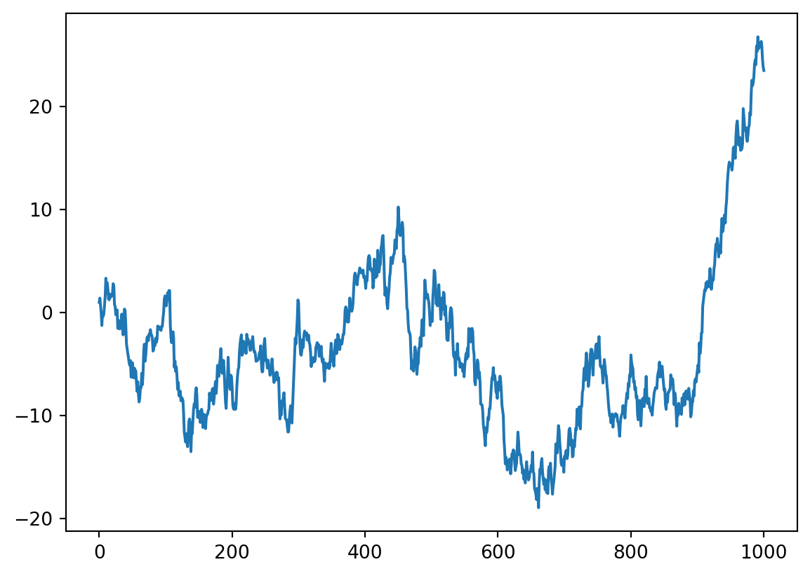
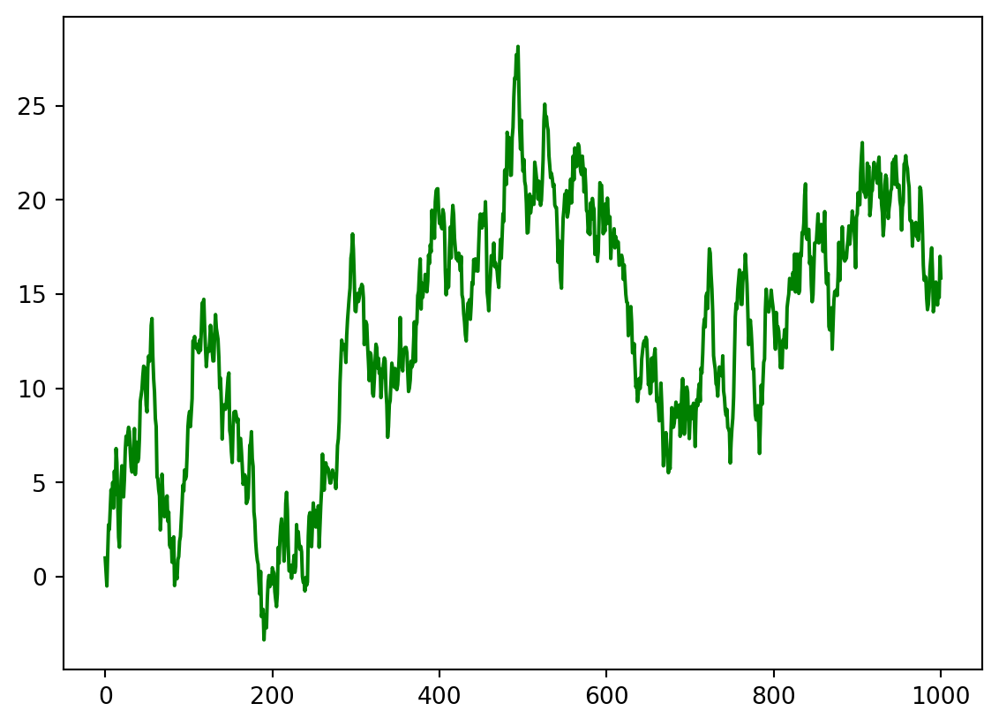
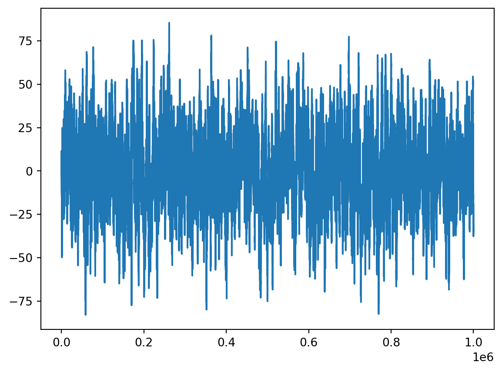
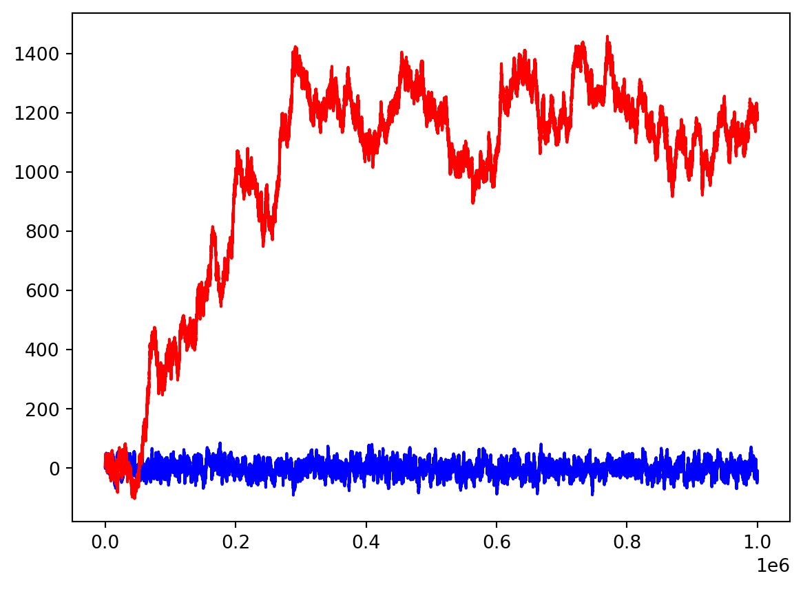
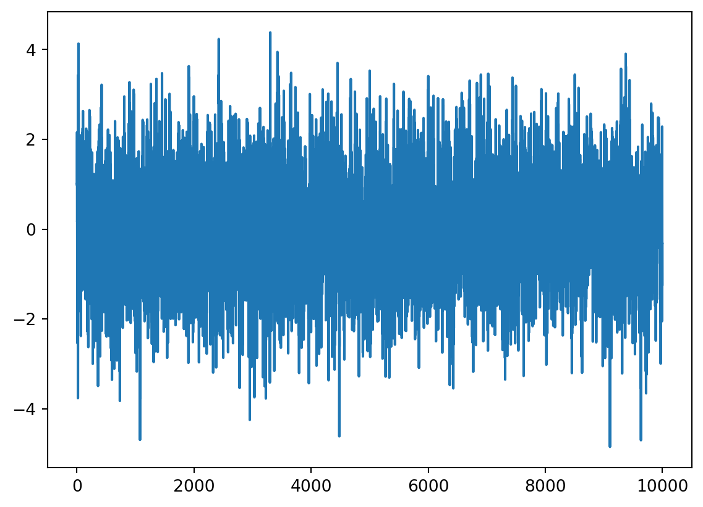
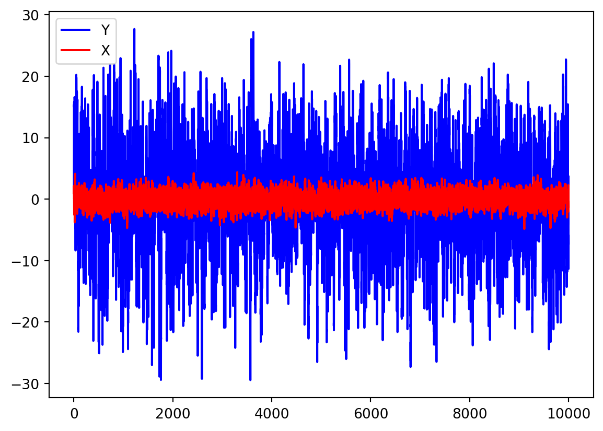
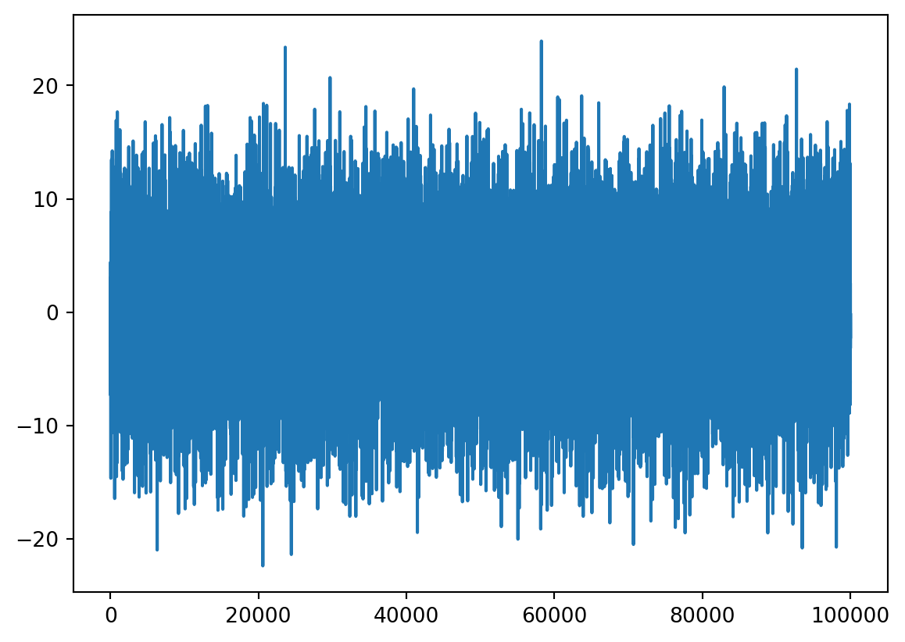

Recall that \(AR(1)\) model describes the times series which satisfies
\[
X_n = a X_{n-1} + Z_n,
\]
where \(\{Z_n\}\) is a white noise. We have, hence,
\[
\begin{aligned}
X_1 & = a X_0 + Z_1,\\
X_2 & = a X_1 + Z_2,\\
X_3 & = a X_2 + Z_3,\\
\vdots\\
X_n & = a X_{n-1} + Z_n,\\
\vdots
\end{aligned}
\]
Thus, to generate the first \(n\) values of the time series, i.e. \(X_1,\ldots,X_n\), one needs to have:
\(X_0\)
\(Z_1,\ldots,Z_n\)
\(X_0\) can be chosen as an arbitrary number. Next, we will model \(Z_1,\ldots,Z_n\) as i.i.d. standard normal r.v.: \(Z_i\sim \mathcal{N}(0,1)\).
Let’s generate first \(1000\) values of \(\{X_n\}\) (i.e. \(X_1,\ldots,X_{1000}\)) for \(a=0.999\); recall that then \(\{X_n\}\) is stationary. We will use a loop from \(1\) to \(n=1000\). We choose \(X_0=1\). Note that if \(X\) is stored in a Numpy array, it’s better to create first an “empty” array with all entries equal to \(0\), and then just assign (otherwise, the array would become larger on each step, and this is very much time and memory consuming). So, let’s run the following code, and plot the corresponding time series:
import numpy as npfrom scipy.stats import normimport matplotlib.pyplot as plta =0.999n =1000z = norm.rvs(size = n+1) # If we generate all Z_0, Z_1, ..., Z_n at oncex = np.zeros(n+1) # Numpy array of n+1 zeroesx[0] =1for i inrange(1,n+1): # Recall that the end is not included x[i] = a * x[i-1] + z[i]plt.plot(x)plt.show()

alternatively, we could generate \(Z_i\) on each step:
import numpy as npfrom scipy.stats import normimport matplotlib.pyplot as plta =0.999n =1000x = np.zeros(n+1) # Numpy array of n+1 zeroesx[0] =1for i inrange(1,n+1): # Recall that the end is not included x[i] = a * x[i-1] + norm.rvs(size =1)[0] # Generate Z_i on each stepplt.plot(x, color ="green")plt.show()

Surely, we got quite different results: not because we generated \(\{Z_n\}\) in different ways, but because of the randomness of \(\{Z_n\}\) (we can fix them by using random_state parameter inside function norm.rvs).
The result may be a bit confusing, as here \(|a|<1\), so \(\{X_n\}\) is a stationary time series, i.e. we would expect more “regular” behaviour. However, this can be seen on large time intervals only.
1.1
Generate the first \(10^6\) values of the time series \(\{X_n\}\) and plot the graph. Include some comments into your code explaining the steps. (Recall that comments in Python are any text after # symbol.)
Your output should be similar to this:
Code
a =0.999n =10**6z = norm.rvs(size = n+1) # If we generate all Z_0, Z_1, ..., Z_n at oncex = np.zeros(n+1) # Numpy array of n+1 zeroesx[0] =1for i inrange(1,n+1): # Recall that the end is not included x[i] = a * x[i-1] + z[i]plt.plot(x)plt.show()

If you still think that the graph too much fluctuates, think about the scale: the length is (approximately) in \(5000\) times larger than the height.
1.2
Very important task as a part of the Lab Test preparation.
Save your Python notebook with solved Task 1.1 in the Anaconda.com/app. In menu File, choose Download and save the Python Notebook to your device. Rename the file on your device, so that the file name would be your student number. Upload the file to Canvas Assignment “Task 1.2 of Lab 9” and submit the Assignment.
Now you may continue working with your file in Anaconda.com/app; further changes there do not need to be uploaded to Canvas.
1.3
Now generate the first \(10^6\) of the time series \(Y_n= Y_{n-1}+W_n\), where \(\{W_n\}\) is another white noise, \(W_n\sim\mathcal{N}(0,1)\), generated separately from \(\{Z_n\}\). Choose \(Y_0=5\). Store it in y and make two graphs for \(X_n\) and \(Y_n\) on the same plot (by typing two commands plt.plot with one plt.show() at the end). Make them in different colours: blue for x and red for y.
Code
a =0.999n =10**6z = norm.rvs(size = n+1)w = norm.rvs(size = n+1)x = np.zeros(n+1)y = np.zeros(n+1)x[0] =1y[0] =5for i inrange(1,n+1): x[i] = a * x[i-1] + z[i] y[i] = y[i-1] + w[i]plt.plot(x, color ="blue")plt.plot(y, color ="red")plt.show()

You can see now how different is the behaviour of a stationary (\(X_n\)) and a non-stationary (\(Y_n\)) time series.
\(AR(2)\)-model
In \(AR(2)\)-model, we have
\[
X_n = a X_{n-1} + b X_{n-2} + Z_n.
\]
Then, we need to set values to \(X_0\) and \(X_1\), and then we can define iteratively \[
\begin{aligned}
X_2 & = a X_1 + b X_0 + Z_2,\\
X_3 & = a X_2 + b X_1 + Z_3,\\
X_4 & = a X_3 + b X_2 + Z_4,\\
\vdots
\end{aligned}
\]
1.4
Consider the example from a lecture: \(X_n=\frac1{12} X_{n-1}+\frac12 X_{n-2}+Z_n\). Set \(X_0=X_1=1\). Generate \(10^4\) values (note that you should start from \(n=2\)) and assign them to x. Plot the graph of x.
Code
a =1/12b =1/2n =10**4z = norm.rvs(size = n+1)x = np.zeros(n+1)x[0] =1x[1] =1for i inrange(2,n+1): x[i] = a * x[i-1] + b * x[i-2] + z[i]plt.plot(x)plt.show()

Hence, this is quite agreed with the theoretical prediction we made on lecture: the time series demonstrates stationary behaviour.
\(ARMA(2,q)\)-model
Recall that \(ARMA(2,q)\) means that
\[
X_n = a X_{n-1} + b X_{n-2} + Z_n + \beta_1 Z_{n-1}+\ldots+\beta_q Z_{n-q}.
\]
We discussed on a lecture that \(MA\)-part with past white noises does not affect the stationarity (or non-stationarity) of $AR-part.
To model e.g. \(ARMA(2,3)\), i.e. \[
X_n = a X_{n-1} + b X_{n-2} + Z_n + \beta_1 Z_{n-1}+\beta_2 Z_{n-2} +\beta_3 Z_{n-3}.
\]
we notice that
\[
\begin{aligned}
X_2 & = a X_1 + b X_0 + Z_2 + \beta_1 Z_1 + \beta_2 Z_0 + \beta_3 Z_{-1},\\
X_3 & = a X_2 + b X_1 + Z_3 + \beta_1 Z_2 + \beta_2 Z_1 +\beta_3 Z_0,\\
X_4 & = a X_3 + b X_2 + Z_4 + \beta_1 Z_3 +\beta_2 Z_2 + \beta_3 Z_1,\\
\vdots
\end{aligned}
\] Hence, we need to set \(X_0\) and \(X_1\) and also \(Z_{-1}\). Usually, \(Z_{-1}=0\).
Consider a modification of the previous time series \(X_n\), keeping \(AR\)-part: \(Y_n=\frac1{12} Y_{n-1}+\frac12 Y_{n-2}+Z_n + 2Z_{n-1}+3Z_{n-2} + 4 Z_{n-3}\). Choose \(Z_{-1}=0\) (note that in Python, if a is an array or list, then a[-1] means the last element of this array), and \(Y_0=Y_1=1\). Generate \(10^4\) values and assign them to y.
Code
a =1/12b =1/2n =10**4z = norm.rvs(size = n+1)y = np.zeros(n+1)y[0] =1y[1] =1z[-1] =0for i inrange(2,n+1): y[i] = a * y[i-1] + b * y[i-2] + z[i] +2* z[i-1] +3* z[i-2] +4* z[i-3]# note that for i=2, z[i-3]=z[-1] is the last element of array z which was assigned to 0
Let’s plot both \(\{X_n\}\) and \(\{Y_n\}\) on the same diagram:
plt.plot(y, color ="blue", label ="Y")plt.plot(x, color ="red", label ="X")plt.legend()plt.show()

Hence, as you can see, the large coefficients before past noises \(Z_{n-1}, Z_{n-2}, Z_{n-3}\) made large fluctuations around the zero mean, but \(Y_n\) is still stationary as expected.
\(ARMA(3,3)\)-model
Recall that, for \(ARMA(3,3)\)-model:
\[
X_n = a X_{n-1} + b X_{n-2} + c X_{n-3} + Z_n + \beta_1 Z_{n-1}+\beta_2 Z_{n-2} +\beta_3 Z_{n-3}.
\]
we would need to consider the characteristic equation
where \(\lambda_1,\lambda_2,\lambda_3\) are the roots of the characteristic equation. We know also that if \(|\lambda_1|>1\), \(|\lambda_2|>1\), \(|\lambda_3|>1\), then the \(ARMA(3,q)\) time series is stationary (for any \(q\), actually).
2 If you have more time
2.1
Choose any \(\lambda_1\),\(\lambda_2\), \(\lambda_3\) such that \(|\lambda_1|>1\), \(|\lambda_2|>1\), \(|\lambda_3|>1\). Calculate \(a,b,c\) such that \(1 - a\lambda - b \lambda^2 -c \lambda^3 = -c(\lambda - \lambda_1)(\lambda - \lambda_2)
(\lambda - \lambda_3)\) would be true (to get that \(1\) you will need \(c\) such that \(c\lambda_1\lambda_2\lambda_3=1\)). Model the corresponding \(ARMA(3,3)\) model (with e.g. \(\beta_1=\beta_2=\beta_3=1\)) and ensure that the behaviour is stationary.
Solution. Choose, e.g. \(\lambda_1=-1.5\), \(\lambda_2=2\), \(\lambda_3=-2\), then
Let us also choose \(\beta_1=\beta_2=\beta_3=1\). We need \(X_0,X_1,X_2\) to start and then we can start generate from \(X_3\). Choose e.g. \(X_0=X_1=X_2=3\). Let’s generate e.g. \(10^5\) values.
a =2/3b =1/4c =-1/6n =10**5z = norm.rvs(size = n+1)x = np.zeros(n+1)x[0] =3x[1] =3x[2] =3for i inrange(3,n+1): x[i] = a * x[i-1] + b * x[i-2] + c * x[i-3] + z[i] + z[i-1] + z[i-2] + z[i-3]plt.plot(x)plt.show()

As you can see, the simulations are agreed with the theory, the behaviour looks stationary.